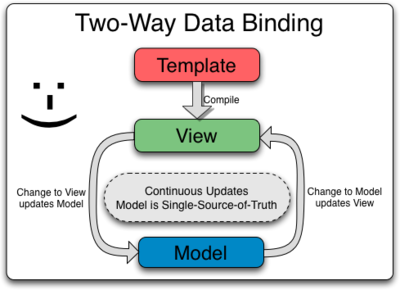
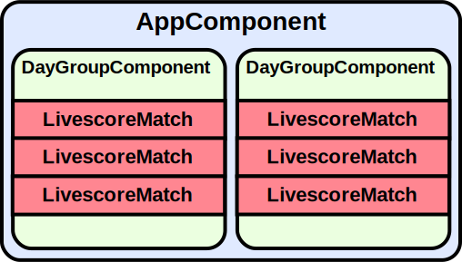

Sviluppare dal futuro con Angular 2
Una pratica technical preview
Andrea Briganti / GDG Cosenza
GDG Cosenza
Il Google Developer Group (GDG) di Cosenza si pone l’obbiettivo di creare una comunità di sviluppatori Android (ma non solo).

Ad oggi GDG è una rete mondiale presente in 110 Nazioni. Far parte di un GDG è totalmente gratuito (Enjoy!)
Questo talk fa per me?
Competenze di base per compredere gli argomenti trattati:
- HTML
- CSS
- Javascript
Lo sviluppo "canonico"
Una buona dose di HTML...
<div class="content bg-tab" style="padding-left:5px;padding-top:10px;">
<div class="row collapse border-bottom-1">
<div class="large-6 medium-6 small-6 columns">
<h6 class="f-yellow">Nome Squadra</h6>
... contornato da Javascript qui e li.
function update_livepanel() {
var placeHolder = $("#live-container");
$.get("/api/v1.0/livematches",function(data,status,xhr){
if(oldlastupdate == null || data.lastupdate != oldlastupdate) {
oldlastupdate = data.lastupdate;
var html = template(data);
placeHolder.empty();
placeHolder.append(html);
placeHolder.foundation('reflow');
[...]
}
Come diventa il codice:
La reazione di chi deve metterci mani
...specie se il codice è altrui
Maggiori limiti attuali
- Difficoltà nell'organizzare id e classi per gli script
- Javascript è un linguaggio poco "ordinato"
- Confusione al crescere della dimensione
- Il codice della pagina non è semantico
 HTML5 e semantica
HTML5 e semantica

 Web Components
Web Components
Strutture complesse...
<div class="menu-container">
<ul class="main-menu">
<li><a href="#">Voce Menu 1</a></li>
<li><a href="#">Voce Menu 2</a></li>
</ul>
</div>
...acquistano semantica
<menu>
<menu-voce url="#">Voce Menu 1</menu-voce>
<menu-voce url="#">Voce Menu 2</menu-voce>
</menu>
Per maggiori info: http://webcomponents.org
 Ecmascript 6
Ecmascript 6
Definizione di una classe in Ecmascript 5
var Shape = function (id, x, y) {
this.id = id;
this.move(x, y);
};
Shape.prototype.move = function (x, y) {
this.x = x;
this.y = y;
};
Ecmascript 6
Definizione di una classe in Ecmascript 6
class Shape {
constructor (id, x, y) {
this.id = id;
this.move(x, y);
}
move (x, y) {
this.x = x;
this.y = y;
}
}
Per maggiori info: http://es6-features.org
Supporto nei browser 
Web Components
Ecmascript 6

Per fortuna esistono i POLYFILLS!
 Angular 2
Angular 2
Angular 2 è un framework Javascript per lo sviluppo di applicazioni web per mobile e desktop.
Lo sviluppo è ancora in alpha
Possibili annunci durante AngularConnect 2015
Perché Angular 2 (e non 1)
Il framework è stato riscritto da zero in Ecmascript 6, ripulendo e semplificando lo sviluppo dai difetti di Angular.
// "Cattivo" esempio in Angular 1
var phonecatApp = angular.module('phonecatApp', []);
phonecatApp.controller('PhoneListCtrl', function ($scope, $http) {
$http.get('phones/phones.json').success(function(data) {
$scope.phones = data;
});
$scope.orderProp = 'age';
});
La scrittura dei componenti è più ordinata e "naturale" e addio alle variabili '$'!
Perché Angular 2 (e non 1)
Il framework strizza fortemente un occhio ai web components.
<!-- "Cattivo esempio in Angular 1 -->
<body>
Write some text in textbox:
<input type="text" ng-model="sometext" />
<h1>Hello {{ sometext }}</h1>
<h4>Uppercase: {{ sometext | uppercase }}</h4>
<h4>Lowercase: {{ sometext | lowercase }}</h4>
</body>
Non vedremo più il DOM "sporcato" da attributi e codici speciali!
Angular e Typescript 
Per lo sviluppo utilizzeremo Typescript
- Codice più ordinato e più object oriented
- Rilevazione di errori a "tempo di compilazione"
- Supporto al completamento automatico negli IDE
La sintassi di Typescript va "nella direzione" di Ecmascript 6 e il compilatore genera all'occorrenza codice ES 5 e 6.
Attualmente è la best choice per Angular 2.
Alternative a Typescript
Sviluppare in Typescript è una scelta.
In alternativa possiamo utilizzare:
- Ecmascript 5
- Ecmascript 6
 Dart
Dart
La scelta non preclude la funzionalità, ma solo lo stile nello sviluppo delle applicazioni.
Cosa vogliamo ottenere?
Nell'esempio che verrà proposto realizzeremo un livescore partendo da un feed json.
Codice dei demo e istruzioni al seguente indirizzo: https://github.com/kbytesys/angular2_codeweek_2015
Demo 1: A tutto Ajax 
Iniziamo a osservare come inserire il riferimento all'applicazione Angular nella pagina html.
<div class="row">
<div class="col-md-12">
<demo1 url="fakedata.json">Loading...</demo1>
<script>
System.import('demo1.js');
</script>
</div>
</div>
- L'applicazione usa un tag "web component-like"
- Il nome e il significato degli attributi sono personalizzati
- Caricamento dinamico dei file javascript se fate uso di systemjs (opzionale)
Costruiamo l'applicazione Angular
export class AppComponent {
url: string;
dategroup_data: Array<JSON>;
polling_id: number;
last_update_str: string;
constructor(http: Http, @Attribute('url') url: string) {
this.url = url;
this.fetchData(http);
this.polling_id = setInterval(
() => { this.fetchData(http) }, 10000
);
}
NOTA: se il decoratore @Attribute non funziona, date un occhiata a questo
bug
La funzione di fetch dei dati
export class AppComponent {
fetchData(http: Http): void {
var request = http.get(this.url)
.toRx()
.map(res => res.json());
// Attenzione all'ordine delle chiamate!
request.subscribeOnError(
error => alert("Errore ajax " + error));
request.subscribeOnNext(
data => this.elaborateJson(data));
request.subscribeOnCompleted(
() => console.debug(JSON.stringify(this.last_update_str))
);
}
Promesse al posto di funzioni e callback di eventi
Ecmascript 6 Promises
Le promesse permettono azioni ascincrone "nel futuro" con la possibilità di un effetto "catena"

Qui un buon articolo su eventi, callback, promesse e altro.
La funzione che elabora i dati
export class AppComponent {
elaborateJson(json_data): void {
if (json_data.lastupdate != this.last_update_str) {
this.last_update_str = json_data.lastupdate
this.dategroup_data = json_data.dategroups;
}
}
Il controllo sul lastupdate serve per evitare l'errata propagazione dei dati a ogni richiesta sulla fonte json
Nel decoratore @Component vengono poste le informazioni base del componente
@Component({
selector: 'demo1',
viewBindings: [
HTTP_BINDINGS
]
})
export class AppComponent {
La voce "selector" indica il nome del tag html con il quale esso verrà riferito
In @View inseriamo il necessario per la renderizzazione
@View({
template: `
<div class="row">
<div class="col-md-6 col-md-offset-3 col-xs-12">
<livescore-daygroup *ng-for="#g of dategroup_data"
[data]="g"/>
</div>
</div>`,
directives: [
DayGroupComponent,
NgFor
]
})
export class AppComponent {
Livescore-daygroup (DayGroupComponent) è un componente figlio.
Il componente figlio indica i parametri in entrata, li elabora e/o li renderizza direttamente nel template
@View([omissis])
@Component({
selector: 'livescore-daygroup',
properties: ['data']
})
class DayGroupComponent {
date: string;
matches_data: JSON;
data: JSON;
onInit() {
this.date = this.data['group_date'];
this.matches_data = this.data['matches'];
}
}
Ma come vengono passati i dati?
One-Way Data Binding 

Two-Way Data Binding

Binding nel livescore
Dopo aver atteso un goal...
Il tutto senza aver in alcun modo "programmato" l'aggiornamento del risultato come avviene usualmente.
Non sono tutte rose...
Nel nostro demo l'applicazione Angular è stata così organizzata:
Perché non abbiamo innestato tutti componenti nel template di AppComponent?
<livescore-daygroup *ng-for="#g of dategroup_data" [data]="g">
<!-- Angular non è Polymer :( -->
<livescore-match *ng-for="#m of g.matches" [data]="m"/>
</livescore-daygroup>
Tutto il contenuto all'interno del tag è solo un placeholder che viene sostituito. Deve essere il template del figlio a caricare a sua volta gli altri componenti.
I tag dell'applicazione e dei componenti vengono inseriti nel DOM (come se fossero Web Components).
<livescore-daygroup ...>
<table ...>
<thead>...</thead>
<tbody>
<livescore-match ...>
<tr>
<td class="ng-binding">Crotone</td>
<td class="ng-binding">1 - 0</td>
<td class="ng-binding">Salernitana</td>
</tr>
</livescore-match>
</tbody>
</table>
</livescore-daygroup>
Questo può mettere in crisi la costruzione di tabelle, causando "curiose" interpretazioni da parte dei browser
Migliore organizzazione
L'esempio precedente è stato volutamente "frammentario"
// demo2.ts
@View({
directives: [
NgFor,
],
pipes: [MatchResultStringPipe],
templateUrl: 'demo2-template.html',
})
export class AppComponent {
Potevamo benissimo utilizzare un solo componente per tutta l'applicazione
Possiamo separare il compito del programmatore da quello del web designer
<div class="row">
<div class="col-md-6 col-lg-offset-3">
<div class="row" *ng-for="#g of dategroup_data">
<h4>{{ g.group_date }}</h4>
<table id="demo1-table" class="table table-striped">
<thead>
<tr>
<th>Squadra A</th>
<th>Risultato</th>
<th>Squadra B</th>
</tr>
</thead>
<tbody>
<tr *ng-for="#m of g.matches">
<td>{{ m.teama_name }}</td>
<td>{{ m | matchResultString}}</td>
<td>{{ m.teamb_name }}</td>
</tr>
</tbody>
</table>
</div>
</div>
</div>
L'url può anche essere generato dinamicamente
Vogliamo aggiungere una nuova funzionalità...
Specifiche:
- Devono essere realizzati due diversi componenti
- Le chiamate ajax non devono essere duplicate
- Il componente di ricerca non deve memorizzare i dati
I servizi in Angular
In Angular 2 i servizi sono semplici classi
La classe LivescoreService
@Injectable()
class LivescoreService {
[...]
updated = new EventEmitter();
fetchData(http: Http, url: string): void { [...] }
elaborateJson(json_data): void { [...] }
getUpdatedEmitter() {
return this.updated.toRx();
}
searchMatch(searchString: string): JSON { [...] }
}
L'EventEmitter permette di generare eventi che possono essere catturati dalle promesse che lo hanno sottoscritto
I componenti ricevono il servizio nel costruttore...
class LivescoreSummaryComponent {
dategroup_data: Array<JSON>;
livescoreService: LivescoreService;
constructor(livescoreService: LivescoreService) {
this.livescoreService = livescoreService;
this.livescoreService.getUpdatedEmitter()
.subscribe((data) => this.dategroup_data=data);
}
}
...ma non saremo noi a dover passare l'oggetto manualmente!
Dependency Injection
Qui per maggiori informazioni
Un modo semplice per definire la d/i in Angular è configurare l'injector nella funzione di bootstrap
bootstrap(
DemoApp4Compnent,
[
ROUTER_BINDINGS,
bind(APP_BASE_HREF).toValue(location.pathname),
HTTP_BINDINGS,
LivescoreService
]
);
LivescoreService è un Singleton!
Potete cambiare la modalità giocando con la funzione bind e/o usando un factory
Una parentesi sul data input
@View({
template: `<h3>La tua squadra vince?</h3>
<input type="text" #search_text placeholder="Nome Squadra"
(keyup.enter)="search(search_text.value)">
<button type="button" class="btn btn-default"
(click)="search(search_text.value)">Cerca</button>
<p class="demo3-risultato">{{ message }}</p>`
})
class LivescoreSearchComponent {
search(search_text) {
var match = this.livescoreService.searchMatch(search_text);
if(match) {
if(match['status'] != 'live') {
this.message = "Partita non iniziata.";
}
Angular2 fornisce una serie di eventi base (click, keyup, ecc...) che possono essere reindirizzati verso funzioni della classe componente
Conclusioni
Angular 2 permette di "assaporare" le tecnologie che saranno realmente in auge nei prossimi anni...

...senza cercare di creare un nuovo standard